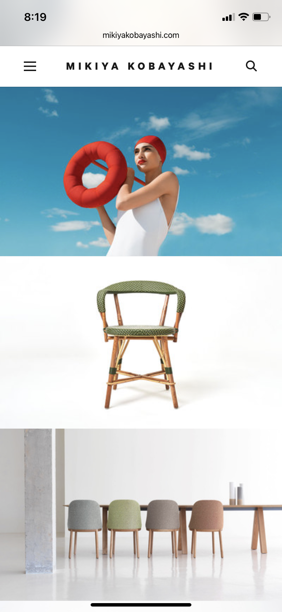

Using sound design principles in web design creates a site that is easy to use, appealing to view, and more likely to hold a user’s attention. Here are three strategies that every developer should keep in mind as they create user interfaces.
Hick's Law

Site: www.ferrari.com
Hick’s Law states that the more complex an interface, the longer it will take a user to make a choice (and the more likely they are to leave your site). Good design gives a better experience when they are presented with fewer options. This lets the natural hierarchy of the page guide the user through the layout.
This home page for the racing team, Scuderia Ferrari, is simple and elegant. There is one main button to read about their new driver, Carlos Seins, on the team blog. Additionally, they have the option of selecting the menu button for more options or scrolling left for more content. Giving the user just three choices keeps the design from being overwhelming and unprofessional. It’s a good application of Hick’s Law.
Repetition
Site: www.mikiyakobayashi.com
Repetition is exactly how it sounds, repeating elements over and over throughout your composition to create a feeling of cohesiveness. This feels “right” to the mind and helps a viewer mentally organize the information and see the whole page as a single concept.
In this example from Japanese sculptor, Mikiya Kobayashi, repetition is used in both subtle and overt ways. The chairs are a theme repeated in the design, including the red donut float at the top of the page, which is used as a seat in the pool later in the layout. A less obvious, but still powerful use of repetition is the way the design uses three, equally-sized rectangular boxes to showcase Kobayashi’s work.
White Space
Site: www.etq-amsterdam.com
One of the most important—and hardest to achieve—principles of good design is white space. White space, also called negative space, is the absence of information. It’s the padding around your content that lets it breathe. New designers fear leaving adequate white space because they worry it will make the design look incomplete. However, as a general rule, the more elements you add to a page, the less impact the page has. Clutter dilutes your message as individual pieces compete for a viewer’s attention. By simplifying and giving each piece room to truly stand out, your work will be stronger.
This design from shoe designer ETQ shows a single shoe on their home page. They make dozens of other colors and models, but by limiting themselves to a single item, a viewer can really consider it. It’s far more impactful than cramming every shoe they make in the layout.